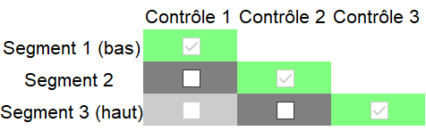
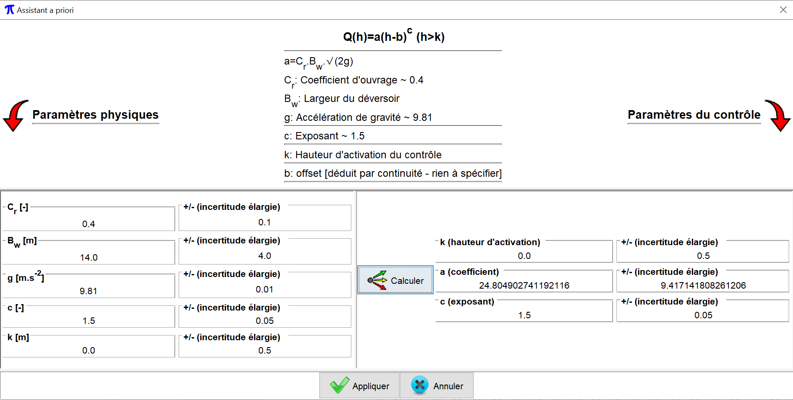
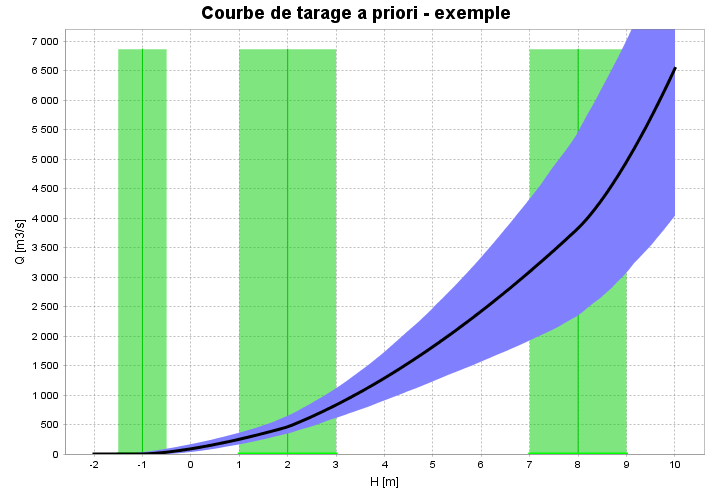

La configuration hydraulique est la définition de l'ensemble des contrôles qui gouvernent la relation physique hauteur-débit, et de leur succession/combinaison lorsque la hauteur d'eau augmente. Elle joue un rôle capital dans une analyse avec BaRatinAGE car elle induit l'équation qui sera utilisée pour la courbe de tarage.
La spécification d'une configuration hydraulique doit résulter d'une analyse hydraulique du fonctionnement de la station hydrométrique. Pour une rivière naturelle, on rencontre par exemple fréquemment la situation suivante: en basses eaux, la relation hauteur-débit est contrôlée par la géométrie d’une section critique au niveau d’un ou plusieurs déversoirs (naturels ou artificiels). Lorsque la hauteur d'eau augmente, le déversoir s'ennoie et la relation hauteur-débit est alors contrôlée par la géométrie et la rugosité moyennes du chenal du lit actif. Pour une hauteur d'eau encore plus importante, une partie de l'écoulement peut s'effectuer dans le lit moyen ou par-dessus les bancs du lit mineur : la relation hauteur-débit est alors contrôlée par deux chenaux, celui du lit actif et celui du lit moyen.
BaRatinAGE permet de formaliser cette analyse hydraulique pour une grande variété de situations, qui couvrent la grande majorité des cas pratiques rencontrés en rivières naturelles (quitte à effectuer quelques approximations acceptables). La pratique recommandée dans BaRatinAGE est de décomposer les sections critiques en déversoirs ou orifices idéalisés, et les chenaux de contrôles en chenaux rectangulaires larges équivalents. Chaque contrôle ainsi introduit doit correspondre à des éléments physiques clairement identifiés sur le terrain. Pour plus de détails sur l'analyse hydraulique d'une station hydrométrique, vous pouvez consulter ce document.
Vous pouvez créer une nouvelle configuration hydraulique de plusieurs façons :
Il vous sera demandé de nommer cette nouvelle configuration hydraulique. Dans l'onglet "Configuration hydraulique", vous devez ensuite spécifier les propriétés de cette configuration. Si vous le souhaitez, vous pouvez saisir un texte libre dans le champ "Description". Vous devez également spécifier le nombre de contrôles qui constituent cette configuration. A titre d'illustration, nous allons travailler sur l'exemple classique mentionné ci-dessus, et sélectionnons donc 3 contrôles (déversoir, lit actif, lit moyen).
Les panneaux de l'onglet "Configuration hydraulique" se mettent alors à jour. En particulier, la matrice suivante, nommée "matrice des contrôles" ou "matrice de Bonnifait" (en l'honneur de son vénérable inventeur), apparaît :

Cette matrice détermine la façon dont les contrôles se succèdent ou s'ajoutent les uns aux autres. Chaque ligne de la matrice correspond à un segment de hauteurs, et chaque colonne à un contrôle hydraulique. La matrice ci-dessus s'interprète donc de la façon suivante :
Cette matrice n'est pas adéquate pour l'exemple considéré ici. En effet, pour le troisième segment, l'écoulement s'effectue à la fois dans le lit actif et dans le lit moyen. Le contrôle par le chenal du lit moyen devrait donc s'ajouter au contrôle par le chenal du lit actif, et non lui succéder. On peut spécifier cette combinaison de contrôles en sélectionnant, pour le troisième segment, à la fois le contrôle 2 ("lit actif") et le contrôle 3 ("lit moyen") comme illustré ci-dessous :

Note 1: Pensez à cliquer sur le bouton "Appliquer" pour sauvegarder les spécifications que vous venez d'effectuer.
Note 2: Il existe quelques restrictions sur le remplissage de la matrice des contrôles (par exemple, un contrôle qui a été désactivé ne peut pas se ré-activer sur un segment supérieur, etc.), ce qui explique pourquoi toutes les cases de la matrice ne sont pas cliquables.
Note 3: L'information contenue dans la matrice des contrôles suffit à écrire l'équation de la courbe de tarage. Pour plus de détails sur cette équation, vous pouvez consulter ce document.
L'analyse hydraulique ne permet pas seulement d'identifier les différents types de contrôles qui régissent la relation hauteur-débit, ainsi que leur succession/combinaison : elle permet également une première estimation quantitative (quoique potentiellement très incertaine) de la courbe de tarage.
Dans BaRatinAGE, chaque contrôle est associé à une relation hauteur (H) - débit (Q) sous la forme de l'équation de base :
Q = a(H-b)c pour H > k (et Q = 0 si H ≤ b)
La spécification des paramètres a priori se fait dans la partie inférieure du panneau descriptif, où chaque contrôle est associé à un onglet. En reprenant l'exemple considéré jusqu'ici, on peut spécifier les caractéristiques du premier contrôle en saisissant une description du contrôle, puis en sélectionnant son type dans le menu déroulant (ici, "déversoir rectangulaire"). Cette sélection permet d'accéder à l'assistant a priori qui vous aidera à relier les propriétés physiques du contrôle et les valeurs incertaines des paramètres k, a et c. En cliquant sur le bouton, l'assistant s'ouvre dans une nouvelle fenêtre comme celle représentée ci-dessous. Dans la partie haute de la fenêtre, les relations entre les propriétés physiques du contrôle et les paramètres k, a et c sont rappelées (ces relations dépendent évidemment du type de contrôle sélectionné précédemment). Vous pouvez renseigner les propriétés physiques dans les champs situés dans la partie gauche de la fenêtre (certains champs sont pré-remplis car ils ne dépendent que du type de contrôle, mais vous pouvez toujours les modifier si vous le souhaitez). Notez que partout dans BaRatinAGE, les incertitudes sont exprimées sous la forme d’incertitudes élargies à 95%, c'est-à-dire comme la demi-longueur d'un intervalle de confiance à 95%. Pour une distribution gaussienne, cela correspond à 1.96 fois l'écart-type. Une fois tous les champs renseignés, un clic sur le bouton "Calculer" permettra de traduire les propriétés physiques du contrôle en termes de paramètres k, a et c, et de propager les incertitudes. Finalement, un clic sur le bouton "appliquer" fermera l'assistant et terminera la spécification des paramètres a priori pour le premier contrôle. Vous pouvez passer au second contrôle en procédant de façon similaire, jusqu'à ce que tous les contrôles soient renseignés.

Une fois les spécifications a priori réalisées pour tous les contrôles, il est possible de tracer une première courbe de tarage (avec incertitudes), que nous nommons la courbe de tarage a priori car elle est réalisée sans l'aide d'aucun jaugeage. Le calcul de la courbe de tarage a priori utilise une approche Monte Carlo : les paramètres k, a et c de tous les contrôles sont tirés au hasard en utilisant les incertitudes spécifiées à l'étape précédente. En réalisant un grand nombre de tirages, on obtient un grand nombre de courbes possibles, que l'on utilise pour calculer un intervalle d'incertitude à un niveau de confiance donné (95% dans BaRatinAGE).
En pratique, vous devez spécifier les informations suivantes tout en haut du panneau graphique :

Voici quelques conseils pour la spécification des a priori :
Pour finir, signalons qu'en cliquant sur le bouton "Autres graphiques", il est possible de tracer les "spaghettis" de courbe de tarage : sur cette figure, chaque courbe correspond à un tirage aléatoire des paramètres k, a, et c de chaque contrôle, comme expliqué précédemment. Le tracé de tous les Nsim tirages aléatoires offre une représentation de l'incertitude différente par rapport au plus classique intervalle (NB : pour éviter que le tracé soit trop long et la figure illisible, un maximum de 100 spaghettis est effectivement tracé).